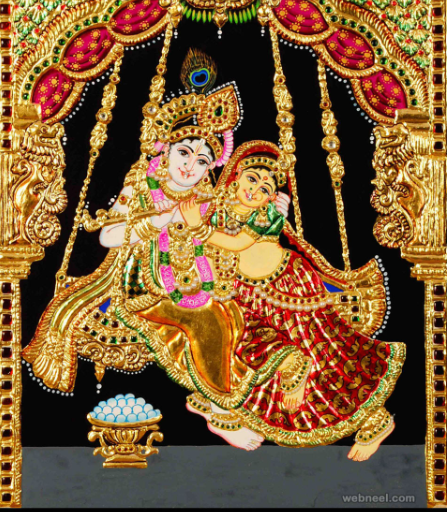

Tanjore Painting (also spelled Thanjavur Painting) is one of the most famous and classical styles of South Indian painting, originating from Thanjavur (Tanjore) in Tamil Nadu. It is known for its rich colors, surface richness, compact composition, and gold foil work, giving it a 3D effect.
1.Origins (16th Century)
I Tanjore painting originated in Thanjavur (Tanjore) in Tamil Nadu during the Nayaka period (under the rule of the Nayaka kings, 16th century).
II The Nayakas were great patrons of art, architecture, and literature, and they encouraged temple building and decoration.
III Initially, Tanjore paintings were created to decorate temple walls, narrating stories of gods and goddesses to devotees.
2.Flourishing Under the Marathas (17th–19th Century)
I The Maratha rulers, especially Serfoji II (1798–1832), were key in popularizing Tanjore paintings
II They brought in artists from Andhra Pradesh and other regions to Thanjavur, leading to a fusion of Deccani, Maratha, and South Indian styles.
III Themes expanded to include mythological scenes, epic stories (Ramayana, Mahabharata), and Bhakti movement saints.
3.Influence of Religion and Culture
I Strongly linked to Hindu temple traditions.
II Depicted major Hindu deities like Lord Krishna, Ganesha, Lakshmi, Saraswati, Shiva-Parvati, and scenes from Bhagavata Purana.
4.British Colonial Period (19th Century
I Some artists began creating secular paintings for British officials—portraits of kings, Indian rulers, and European figures appeared.
II Tanjore paintings became collectibles for colonial patrons.
5.Modern Era (20th Century onwards)
I Modern Era (20th Century onwards)
II Artists began using synthetic colors, but the tradition of gold foil and embossed effects continues.
III Today, Tanjore painting is both a cultural heritage art and a commercial art form for home décor and exhibitions.
I 'Rajaraja Chola Artists' –
1.Though not directly linked to the later Tanjore painting style, the Chola dynasty (9th–13th century) temple murals in Brihadeeswara Temple, Thanjavur inspired later artists of the Nayaka and Maratha periods.
II 'Nayaka & Maratha Court Artists' –
1. Artists patronized by Nayaka rulers (16th century) and Maratha rulers (17th–19th century) such as Serfoji II were instrumental in shaping the style.
2. Many were anonymous temple artists who passed the tradition through gurukula systems (teacher-disciple learning).
III 'S. Rajam' –
1.A famous artist, musician, and teacher who helped popularize Tanjore painting in modern exhibitions and academic art circles.
1.Rich and vibrant colors – red, green, blue, white dominate.
2.Gold foil work (22-carat gold leaf) adds grandeur and glow.
3.Semi-precious stones and embossed detailing for a 3D look.
4.Religious themes: Depictions of Hindu gods and goddesses like Krishna, Ganesha, Lakshmi, Saraswati, and Shiva.
5.Central deity is the main focus, surrounded by decorative arches, pillars, and floral motifs.
6.Flat background with intricate detailing.